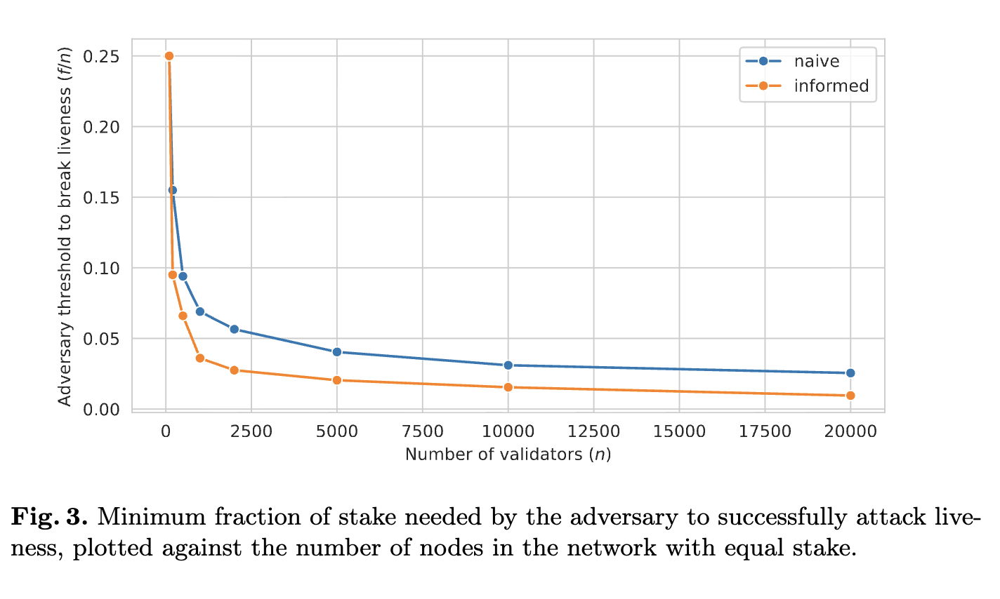

Quentin Kniep, Maxime Laval, Jakub Sliwinski, Roger Wattenhofer
ESORICS 2024
This work examines the resilience properties of the Snowball and Avalanche protocols that underlie the popular Avalanche blockchain. We experimentally quantify the resilience of Snowball using a simulation implemented in Rust, where the adversary strategically rebalances the network to delay termination.
We show that in a network of n nodes of equal stake, the adversary is able to break liveness when controlling Ω(√n) nodes. Specifically, for n = 2000, a simple adversary controlling 5.2% of stake can successfully attack liveness. When the adversary is given additional information about the state of the network (without any communication or other advantages), the stake needed for a successful attack is as little as 2.8%. We show that the adversary can break safety in time exponentially dependent on their stake, and inversely linearly related to the size of the network, e.g. in 265 rounds in expectation when the adversary controls 25% of a network of 3000.
We conclude that Snowball and Avalanche are akin to Byzantine reliable broadcast protocols as opposed to consensus.

@inproceedings{kniep2024QuantifyingLiveness,
author = {Q. Kniep and Maxime Laval and Jakub Sliwinski and Roger Wattenhofer},
title = {Quantifying Liveness and Safety of Avalanche's Snowball},
booktitle = {ESORICS 2024},
year = {2024}
}